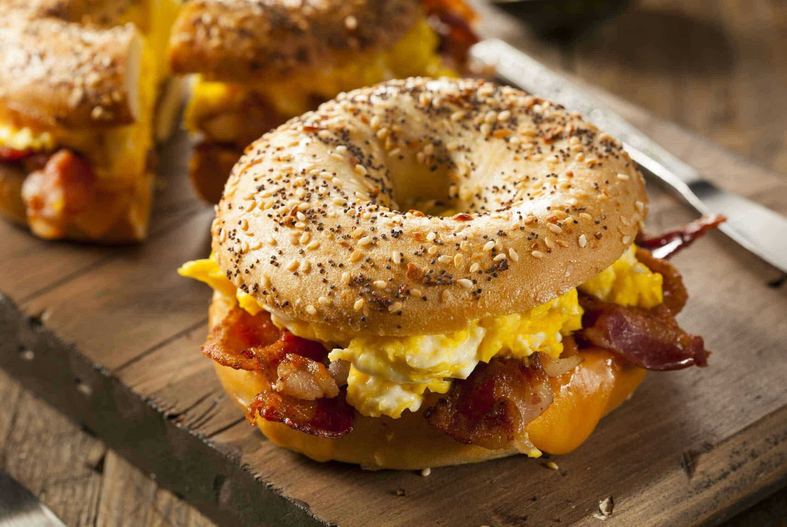
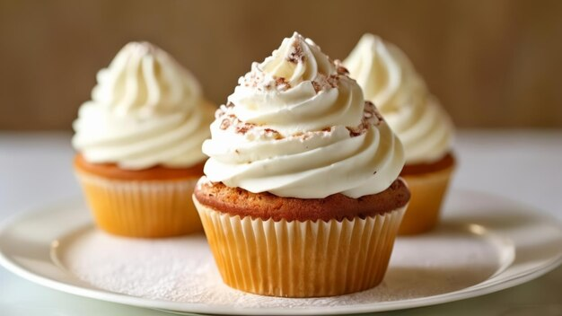

Crosiant
A croissant tastes rich, buttery, slightly sweet, and delicately flaky, with a soft, airy interior that contrasts its crisp exterior.

Bagel
slightly crispy, golden-brown crust with a chewy, dense interior and a subtle, slightly sweet and malty flavor that pairs well with a variety of toppings.

Cup cake
A cupcake typically tastes sweet, soft, and moist, with a rich flavor from the cake and a creamy, sugary frosting that melts in your mouth.